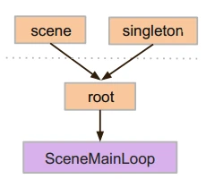
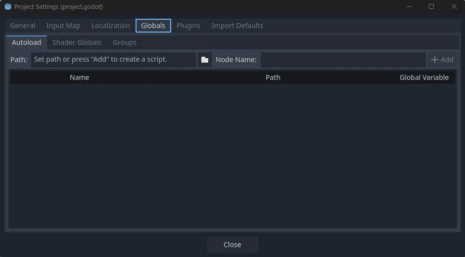
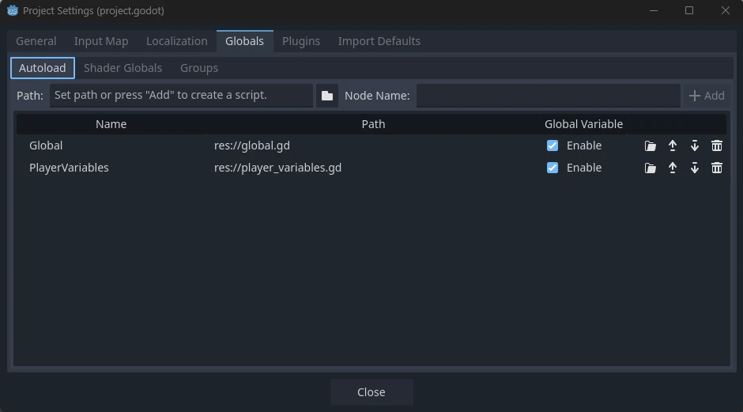
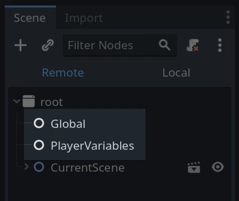
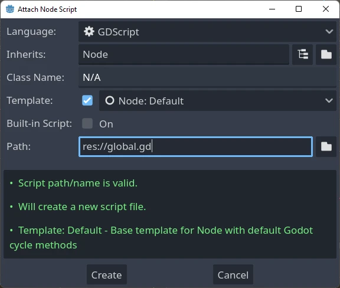
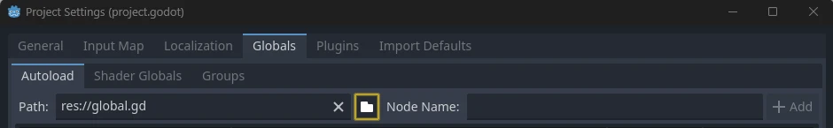

Singleton (Autoload)
Giới thiệu
Hệ thống scene của Godot tuy mạnh mẽ và linh hoạt nhưng có một nhược điểm: không có cách nào để lưu trữ thông tin (ví dụ điểm số hoặc túi đồ của người chơi) mà nhiều scene cùng cần đến.
Có thể giải quyết vấn đề này bằng một số cách làm tạm, nhưng chúng đều có những hạn chế riêng:
Bạn có thể dùng một scene "chủ" để tải và gỡ các scene khác làm con của nó. Tuy nhiên, như vậy bạn sẽ không thể chạy riêng từng scene đó mà vẫn mong chúng hoạt động đúng.
Thông tin có thể được lưu xuống đĩa trong
user://rồi được các scene cần đến tải lên, nhưng việc lưu và tải dữ liệu thường xuyên rất phiền phức và có thể chậm.
Mẫu Singleton là một công cụ hữu ích để giải quyết trường hợp phổ biến khi bạn cần lưu thông tin bền vững giữa các scene. Trong trường hợp của chúng ta, có thể tái sử dụng cùng một scene hoặc lớp cho nhiều singleton, miễn là chúng có tên khác nhau.
Dùng khái niệm này, bạn có thể tạo các đối tượng:
Luôn được tải, bất kể scene nào đang chạy.
Có thể lưu các biến toàn cục như thông tin người chơi.
Có thể xử lý việc chuyển scene và hiệu ứng chuyển cảnh giữa các scene.
Hoạt động như một singleton, vì theo thiết kế GDScript không hỗ trợ biến toàn cục.
Autoload các node và script có thể mang lại cho chúng ta những đặc tính này.
Ghi chú
Godot không biến một Autoload thành singleton "thực sự" theo đúng mẫu thiết kế singleton. Người dùng vẫn có thể tạo instance của nó nhiều lần nếu muốn.
Mẹo
Nếu bạn tạo một autoload trong một plugin trình chỉnh sửa, hãy cân nhắc tự động đăng ký nó trong Project Settings khi plugin được bật.
Autoload
Bạn có thể tạo một Autoload để tải một scene hoặc một script kế thừa từ class_Node.
Ghi chú
Khi autoload một script, một class_Node sẽ được tạo và script sẽ được gắn vào nó. Node này sẽ được thêm vào viewport gốc trước khi bất kỳ scene nào khác được tải.

Để autoload một scene hoặc script, hãy bắt đầu từ menu và đi tới Project > Project Settings > Globals > Autoload.

Tại đây bạn có thể thêm bao nhiêu scene hoặc script tùy ý. Mỗi mục trong danh sách cần một tên, tên này được gán cho thuộc tính name của node. Thứ tự các mục khi được thêm vào cây scene toàn cục có thể thay đổi bằng các phím mũi tên lên/xuống. Giống như các scene thông thường, engine sẽ đọc các node này theo thứ tự từ trên xuống dưới.

Nếu cột Enable được chọn (mặc định), singleton có thể được truy cập trực tiếp trong GDScript:
PlayerVariables.health -= 10
Cột Enable không có tác dụng trong mã C#. Tuy nhiên, nếu singleton là một script C#, bạn có thể đạt hiệu quả tương tự bằng cách thêm một thuộc tính static tên là Instance và gán nó trong _Ready():
public partial class PlayerVariables : Node
{
public static PlayerVariables Instance { get; private set; }
public int Health { get; set; }
public override void _Ready()
{
Instance = this;
}
}
Cách này cho phép truy cập singleton từ mã C# mà không cần GetNode() và không cần ép kiểu:
PlayerVariables.Instance.Health -= 10;
Lưu ý rằng các đối tượng autoload (script và/hoặc scene) được truy cập giống như mọi node khác trong cây scene. Thực tế, nếu nhìn vào cây scene đang chạy, bạn sẽ thấy các node được autoload xuất hiện:

Cảnh báo
Các autoload không được xóa bằng free() hoặc queue_free() khi đang chạy, nếu không engine sẽ bị crash.
Bộ chuyển scene tùy chỉnh
Bài hướng dẫn này sẽ minh họa cách xây dựng một bộ chuyển scene bằng autoload. Để chuyển scene cơ bản, bạn có thể dùng phương thức SceneTree.change_scene_to_file() (xem Sử dụng SceneTree để biết chi tiết). Tuy nhiên, nếu bạn cần hành vi phức tạp hơn khi chuyển scene, cách này cung cấp nhiều chức năng hơn.
Để bắt đầu, hãy tải mẫu tại đây: singleton_autoload_starter.zip và mở nó trong Godot.
Có thể xuất hiện một cửa sổ thông báo rằng dự án được mở lần cuối bằng một phiên bản Godot cũ hơn, điều đó không thành vấn đề. Nhấn Ok để mở dự án.
Dự án chứa hai scene: scene_1.tscn và scene_2.tscn. Mỗi scene chứa một label hiển thị tên scene và một nút đã được kết nối signal pressed(). Khi chạy dự án, nó bắt đầu ở scene_1.tscn. Tuy nhiên, nhấn nút chẳng có tác dụng gì.
Tạo script
Mở cửa sổ Script và tạo một script mới tên là global.gd. Đảm bảo nó kế thừa từ Node:

Bước tiếp theo là thêm script này vào danh sách autoload. Từ menu, mở Project > Project Settings > Globals > Autoload và chọn script bằng cách nhấn nút duyệt hoặc gõ đường dẫn của nó: res://global.gd. Nhấn Add để thêm nó vào danh sách autoload và đặt tên là "Global", điều này là bắt buộc để các script truy cập nó bằng tên "Global":

Giờ đây, mỗi khi chạy bất kỳ scene nào trong dự án, script này sẽ luôn được tải.
Quay lại script, nó cần lấy scene hiện tại trong hàm _ready(). Cả scene hiện tại (scene có nút bấm) và global.gd đều là con của root, nhưng các node được autoload luôn đứng đầu. Điều này có nghĩa là node con cuối cùng của root luôn là scene đã được tải.
extends Node
var current_scene = null
func _ready():
var root = get_tree().root
# Using a negative index counts from the end, so this gets the last child node of `root`.
current_scene = root.get_child(-1)
using Godot;
public partial class Global : Node
{
public Node CurrentScene { get; set; }
public override void _Ready()
{
Viewport root = GetTree().Root;
// Using a negative index counts from the end, so this gets the last child node of `root`.
CurrentScene = root.GetChild(-1);
}
}
Giờ chúng ta cần một hàm để chuyển scene. Hàm này cần giải phóng scene hiện tại và thay thế nó bằng scene được yêu cầu.
func goto_scene(path):
# This function will usually be called from a signal callback,
# or some other function in the current scene.
# Deleting the current scene at this point is
# a bad idea, because it may still be executing code.
# This will result in a crash or unexpected behavior.
# The solution is to defer the load to a later time, when
# we can be sure that no code from the current scene is running:
_deferred_goto_scene.call_deferred(path)
func _deferred_goto_scene(path):
# It is now safe to remove the current scene.
current_scene.free()
# Load the new scene.
var s = ResourceLoader.load(path)
# Instance the new scene.
current_scene = s.instantiate()
# Add it to the active scene, as child of root.
get_tree().root.add_child(current_scene)
# Optionally, to make it compatible with the SceneTree.change_scene_to_file() API.
get_tree().current_scene = current_scene
public void GotoScene(string path)
{
// This function will usually be called from a signal callback,
// or some other function from the current scene.
// Deleting the current scene at this point is
// a bad idea, because it may still be executing code.
// This will result in a crash or unexpected behavior.
// The solution is to defer the load to a later time, when
// we can be sure that no code from the current scene is running:
CallDeferred(MethodName.DeferredGotoScene, path);
}
public void DeferredGotoScene(string path)
{
// It is now safe to remove the current scene.
CurrentScene.Free();
// Load a new scene.
var nextScene = GD.Load<PackedScene>(path);
// Instance the new scene.
CurrentScene = nextScene.Instantiate();
// Add it to the active scene, as child of root.
GetTree().Root.AddChild(CurrentScene);
// Optionally, to make it compatible with the SceneTree.change_scene_to_file() API.
GetTree().CurrentScene = CurrentScene;
}
Nhờ dùng Object.call_deferred(), hàm thứ hai sẽ chỉ chạy khi toàn bộ mã của scene hiện tại đã hoàn tất. Nhờ vậy, scene hiện tại sẽ không bị xóa khi nó vẫn đang được dùng (tức là mã của nó vẫn đang chạy).
Cuối cùng, chúng ta cần điền nội dung cho các hàm callback còn trống trong hai scene:
# Add to 'scene_1.gd'.
func _on_button_pressed():
Global.goto_scene("res://scene_2.tscn")
// Add to 'Scene1.cs'.
private void OnButtonPressed()
{
var global = GetNode<Global>("/root/Global");
global.GotoScene("res://Scene2.tscn");
}
và
# Add to 'scene_2.gd'.
func _on_button_pressed():
Global.goto_scene("res://scene_1.tscn")
// Add to 'Scene2.cs'.
private void OnButtonPressed()
{
var global = GetNode<Global>("/root/Global");
global.GotoScene("res://Scene1.tscn");
}
Chạy dự án và kiểm tra rằng bạn có thể chuyển qua lại giữa các scene bằng cách nhấn nút.
Ghi chú
Khi scene nhỏ, quá trình chuyển diễn ra tức thì. Tuy nhiên, nếu scene của bạn phức tạp hơn, chúng có thể mất một khoảng thời gian đáng kể mới xuất hiện. Để biết cách xử lý việc này, hãy xem bài hướng dẫn tiếp theo: Tải nền.
Ngoài ra, nếu thời gian tải tương đối ngắn (khoảng dưới 3 giây), bạn có thể hiển thị một "bảng thông báo đang tải" bằng cách hiện một phần tử 2D nào đó ngay trước khi chuyển scene. Sau đó bạn có thể ẩn nó ngay sau khi scene đã được chuyển. Cách này có thể dùng để báo cho người chơi biết một scene đang được tải.